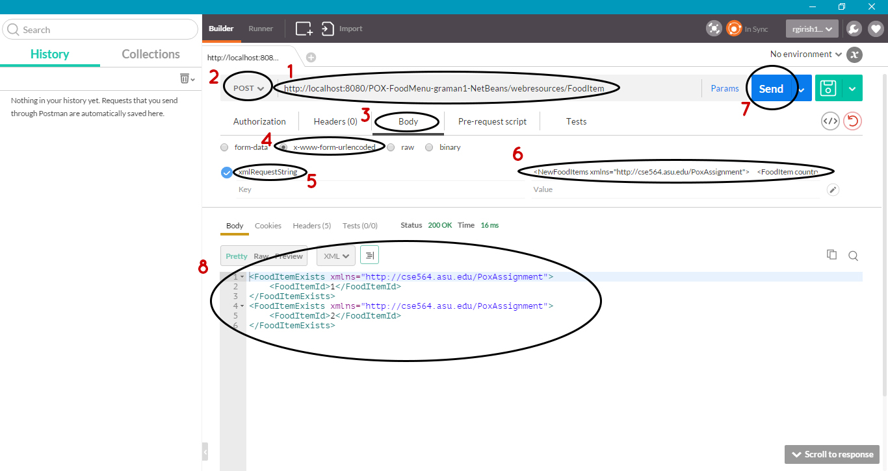

Prerequisites
This project does not have a UI to it – I used the REST Client Postman to access the web services.
You can download postman from this link -
https://www.getpostman.com/.
Java v7, Netbeans 8.1 and Glassfish 4.1.1 (hasn’t been tested in other versions- project definitely works with these versions)
Instructions to run the project
Inside the zip file, is the project folder from my workspace - POX-FoodMenu-graman1-NetBeans.
File -> Open Project -> Navigate_to_this_folder_and_select_it_to_open
Once it has loaded, click on the Run Project icon to run it in the browser of your choice.
Once you’re able to see the index.html page, open up Postman.
You will have to sign-up with them which will take about 10 seconds.
Once postman opens up, follow this image for what to do next:

1) First, copy-paste the URI in the address bar.
2) Select the POST method from the drop-down list.
3) Select the Body tab to enter the request message.
4) Select x-www-form-urlencoded.
5) Type xmlRequestString in the field for key.
6) Type the XML request message in the field for value.
7) Click on the Send button to send the request to the server.
8) The corresponding response message will show up in the response body as shown.
A request message in XML will return <InvalidMessage/> as response only if it does not contain the attributes and elements that it is supposed to have. When extra elements/attributes are given, it will just capture the required attributes and elements and disregard the others.